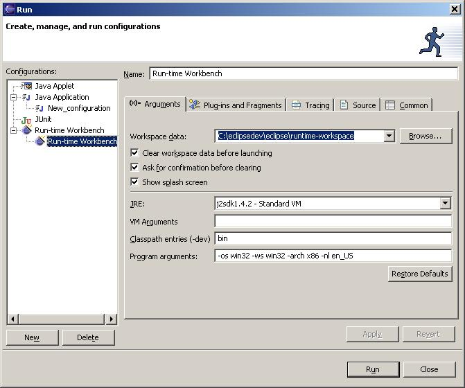
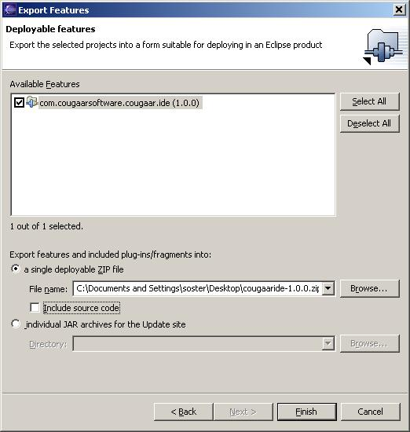

Building CougaarIDE
NOTE:
As CougaarIDE is comprised of a number of Plugins for Eclipse, it currently can only be built from Eclipse.
Therefore you will need to install the Eclipse SDK before attempting to build CougaarIDE.
Step 1: Obtain the source
CougaarIDE source is currently only available from CVS, although file releases are expected soon from Cougaar Forge.
In order to obtain the source from CVS, you can either get a checkout using a CVS program or you can have eclipse do the CVS work for you.
Option 1: External CVS Program
Download a CVS program and use the information on this page to get a checkout of all the modules under the main cougaaride module.
Option 2: Use Eclipse
The easiest way to avoid a lot of typeing is to use the Eclipse project sets we have provided to automate the checkout and setup of all the CougaarIDE sub-projects. Download one of the following:
Either:
Anonymous CVS Access or
Developer SSH CVS Access
Then use the instructions on this page to import the projects.
Step 2: Build the source
Eclipse should automatically build all the projects for you, but it may ask you some questions, just answer yes.
(Optional) Step 3: Run in Run-time Workbench
In order to test the plugins, you can lauch the Run-time Workbench.
- Select the Menu Run -> Run...
- Select Run-time WorkBench and press New...
- Modify any settings you want (defaults should be fine)
- Press "Run"

This will launch an internal eclipse runtime, that you can use to test changes to the code.
Step 4: Deploy
In Step 3 we ran Eclipse with CougaarIDE in an embedded testing Eclipse install.
In order to use CougaarIDE for actual development we want to install it into our standard Eclipse installation.
To achieve this we will use Eclipse's Export functionality to create a zip file with everything we need in it:
- Select the Menu File -> Export...
- Select "Deployable features" and press Next ->
- In the "Available Features" list, select "com.cougaarsoftware.cougaar.ide"
- Select "a single deployable Zip file"
- Browse to the file you want to export to, using the Browse... button
- Press "Finish"

You have now created a zip file that can be used to install CougaarIDE into any existing Eclipse installation.